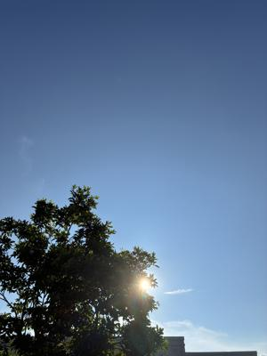
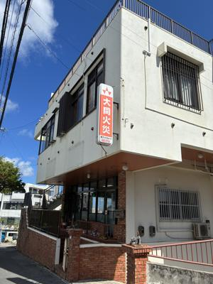

うるがいの話 ある日
最新: 軽自動車の保険解約【うるがいの話 ある日】とは 一日だけのプログです
『うるがいの話』の最新一日だけのプログで、通信料が少なく経済的だ。カニの画像をクリックすると全ての日付が載る『うるがいの話』サイトを表示します
|
|
【うるがいの話】 うるがい(ｳﾙｶﾞｲ urugai)とは、『もずくがに』の名前でとても大きくなります。 |
|---|---|
|
|
【カミマヤーの話】 猫のことを方言でマヤーといいます。カミマヤー（kamimayaa）とは、神の猫のことです。 |
|
【たながぁの音楽】 たながぁ（ﾀﾅｶﾞｰ tanagaa）とは手長えびのことで、何種類かあり大きいのは車 エビぐらいになります。 |

|
【ぶながぁの話】 ぶながぁ(ﾌﾞﾅｶﾞｰ bunagaa)とは、赤い髪の毛、赤い身体、そして身長は１ｍ２０ｃｍ ぐらい、川の蟹を食べているの目撃された。場所は沖縄県国頭郡大宜味村のと ある村僕の隣近所に住んでいる爺さんから、聞いた話です。 |
|
|
【ギーマの話】 ギーマ(giima)とは、山原の里山に咲くスズランに似た、 花を付けます。実は食べられます、 気が付くと口の周りが紫になっています。 |
2026年07月28日 (火）軽自動車の保険解約
15:40

以前子供が、働いていた職場関係で子供の名義で契約していた軽
自動車の契約の解約手続きを、宜野湾市の保険会社の事務所へ行
った。

自動車道路で行くことにした、ｅｔｃの入り口が２か所、左側を
選ぶ、！なんと前のレンタカーの軽自動車がゲートを閉ざさせて
しまった。恐る恐るバックする、すると右側もゲートが閉ざされ
通行禁止の表示が２か所になった。・・しばらくするとゲートが
開く、移動中、下腹部に痛みがズキズキ。保険会社では、解約書
に子供の名前を記入し、その後、私のサインと父親と記入し手続
きは完了。そして、帰途につくと下腹部に痛みが、ズキズキと途
中で、コドモから電話が来た。車を止め電話をする、解約の確認
だった、８月１日にコドモが新たに契約を行うことになっている
。家に戻り座薬を投入、今のところ痛みはおさまっている。
真夏の沖縄、赤く染まる山 台風９号の塩害か 渡嘉敷島
そうそう、裏庭のバタフライピーも葉っぱが、枯れていく。同じ
か。